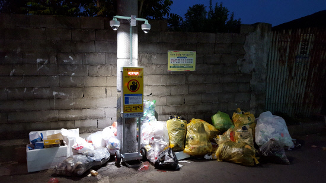

MeerCam
MeerCam은 영상의 움직임을 감지하여
텍스트로 요약해주는 지능형 영상분석 서비스입니다
| 주요기능
영상 분석시간 단축
영상 분석을 가속화하여
중요한 장면을 빠르게 분석
특정 탐색대상 지정
탐색할 대상들을 지정 가능
원하는 시간 설정
원하는 시간으로 지정하여 분석
| 추천 용도
유튜브 컷편집가능
긴 영상의 특정 장면을 분석하고
컷편집시간을 단축시킬 수 있습니다.
CCTV 분석가능
CCTV의 중요 장면을 분석하고
필요한 정보를 추출할 수 있습니다
